Welcome to our scholarship website for Japanese students who are interested in our BSc degree in Computer Science at Columbia College of Missouri. Japanese students who have completed their GCE A-level exams are very strongly encouraged to apply for admission to our college.
We already have a scholarship outreach program in South Asia. The first outreach to Nepali high school students was back in 2020 and was organized by my Nepali students who are now successful graduates (see information below). We now have a CCCS-Nepal Scholarships program, focusing on high school graduates who took GCE A-level exams. I’m from Singapore and took my GCE A-level exams when I was in high school many years ago. In my opinion, GCE A-level exams are way more rigorous than ACT/SAT.
We are now expanding our scholarship program in East Asia, starting with our CCCS-Japan Scholarships to GCE A-level Japanese high school students. After Japan, we will begin our CCCS-South-Korea Scholarships. We also plan to have scholarship programs in South-east Asian countries Vietnam, Thailand, Malaysia and Singapore.
We have a very rigorous CS program. Companies that hire my graduates (including those from Nepal) are listed below. These include Google, Facebook/Meta, Microsoft, Amazon, AT&T, etc. Besides Computer Science, Columbia College also offers other degrees. Many of my CS students double-major in Mathematics.
The information below will show you that the Computer Science program at Columbia College of Missouri is a very strong CS program. We hope that you will decide to join us and help bring Japanese students to CCCS to strengthen our CS program. And to also build a strong Japanese community here.
Please feel free to contact me if you have questions or just to chat.

Dr. Yihsiang Liow
Associate Professor of Computer Science
Columbia College
1001 Rogers St, Columbia, MO, USA
yliow@ccis.edu |
CCCS discord (yliow)
https://www.ccis.edu/faculty/profiles/yihsiang-liow
Before I begin, "CC" = “Columbia College” and “CCCS” = “Columbia College Computer Science”.
Choose your CS program very carefully. Understanding the strength of a CS program is very important.
Many students think that once they have a CS degree, they are guaranteed a job. That’s just not true. The current (2026) unemployment rate of new CS graduates (in the USA) is 6.1-7.0%. And the brand name of the school is not a guarantee. The #1 in CS is MIT. I know a graduate from MIT who is unemployed and works at a grocery store.
So analyze CS degree programs very carefully. Don’t go to the wrong program and waste your money, and more importantly, don’t waste your time and your life.
In the next sections, I'll talk about the academics and student life of CCCS, cost of attendance, and financial support including scholarship. In terms of scholarships, there are two options (details in section Financial support):
When you have decided to come to CCCS, go to the section Get Started.
OK. Now let’s begin.
We have an extremely strong CS degree program. I have graduates who are successful in obtaining employment with top companies. Some students have multiple job offers months before graduation. I also have students who have gone on to graduate schools to pursue a Ph.D./MSc. in computer science. Here is a non-exhaustive list of multi-billion dollar revenue companies that hired some of my graduates:
Here is a pdf of companies hiring my CS graduates. It also contains information on my graduates going on to do MSc. and Ph.D. as well as startups created by my graduates.
I have 3 graduates who went to Google. It is well known that it is 21 times harder to get into Google than to get into Harvard. Altogether I have graduates working at four of the Mag 7 companies. The average annual pay for a recent CS major is US$80K while the starting pay at Google is around US$150K plus bonus and stock options.
ASIDE: The Mag 7 ("Magnificent Seven") are seven of the largest, most valuable and most influential US technology-focused companies: Google, Microsoft, Amazon, Meta, Apple, Nvidia, and Tesla. They are known for dominating industries like AI, cloud computing, and social media. The starting pay for top 100 companies including Mag 7 companies are significantly higher than US$80K. The FAANG group is also made up of powerful companies: Facebook (now Meta), Apple, Amazon, Netflix, and Google.
Here are some of my international graduates and the companies that hire them:
Here are the testimonials from some of my graduates:
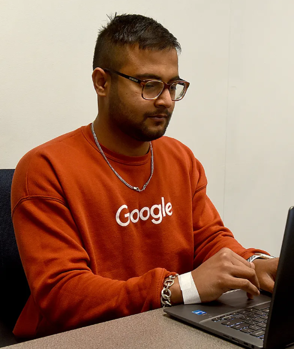
“The CS program at Columbia College is hugely underrated. We have one of the top computer science programs in the Midwest. To have such a small group of students and still have a shot at the world’s top software companies – Google, Amazon, AT&T and lots of other industry-leading companies – is a huge deal.”
– Saurav Bhattarai (Google, Netflix)
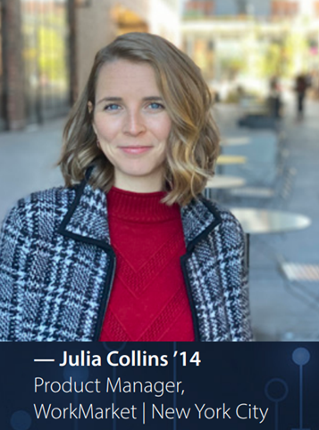
“If you do the math on return on investment for your college degree, the computer science degree at CC has to be the best in the region.
“I hope over time people can understand how rigorous this program is and how well-prepared the graduates are. People see that in me now that I’m out in the field.
– Julia Collins (ADP, co-founder of Truss)
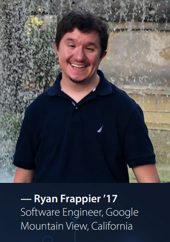
“I would not be where I am without the experiences I had at CC. Being a tutor to other CC students and high school students for Dr. Liow made a pretty big impression on me as a whole. Having the opportunity to understand students and help them helped me grow.”

“At times the program was tough, but I appreciated it and never again wavered in my growing passion for computer science.”
- Samuel Leubbert (MidwayUSA)
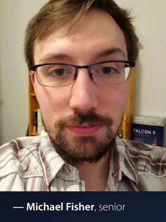
“Then I got into it and really fell in love with the entire discipline. I thought I had critical thinking skills until I got into it and realized that I might actually be dumb. It trained us to think in a totally different way. It teaches you about perseverance. The people who are successful are the ones who realize early on that it’s going to be difficult and who just keep persevering forward and accepting that it’s going to be challenging.”
- Michael FIsher (Selex ES, Garmin)
CCCS is particularly strong in algorithms. This is the most valuable skill for a CS major. The job interviews at all top companies depend primarily on deep knowledge and skill in algorithms and data structures.
I believe that both the theory and the practice of CS is important. Theory is not enough. I believe that a strong CS graduate must also be extremely strong in coding. CCCS students write way more code than the average CS student from other schools. I call this extreme over-practice of coding. To be an extremely productive software engineer, you must speak in your programming language as though you are speaking English.
Our main languages are C++ (read this for the importance of C++) and python. Because of my philosophy of over-practice of coding, students will become strong in learning and adapting to new languages quickly. Students are strong enough to learn a new language in 2 weeks. We also use MIPS, SQL, OCAML, Java, etc. In the industry it’s common to learn a language in 2-3 days. My graduates have success careers as software engineers using all kinds of languages: C, C++, Python, Java, C#, Rust, Go, etc.
Besides our strength in software engineering, I have many graduates who are successful in the area of embedded software engineering. Their work includes embedded software engineering for high-speed bullet trains, medical devices, air traffic management, avionics and GPS.
Besides weekly assignments, CCCS is very project heavy and many classes have significant class projects. One tradition of CCCS is our
End-of-semester CS Presentation Day. Here, Cole Schwandt is presenting his project for the computer graphics class:

Here’s the link to all the other presentations for that day. I believe that besides knowing theory and coding, it’s extremely important that students learn to give public talks. If a student cannot confidently speak in public, he will do badly for a job interview. I consider the presentations part of CCCS education. Here are some assignments for the computer graphics class:
Angry bird, Fractal terrain,
Robotic arm. For the AI class, here is the AI othello tournament project where the AI programs created by students play against each other:

We have small classes and we are not like schools where there are 200-800 students in a class. Here, Eric Garcia is giving a proof in the cryptography class.
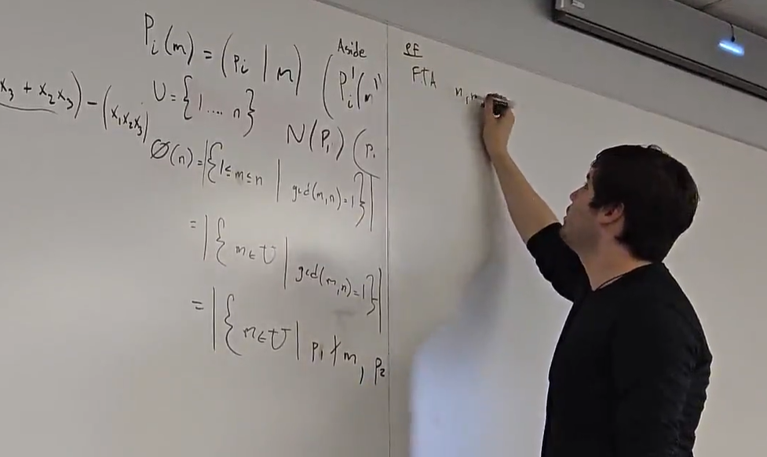
Here are some other proof discussions led by other students. Richard Feynman (Caltech, physics Nobel prize winner) said:“I think, however, that there isn’t any solution to this problem of education other than to realize that the best teaching can be done only when there is a direct individual relationship between a student and a good teacher – a situation in which the student discusses the ideas, thinks about the things, and talks about the things. It’s impossible to learn very much by simply sitting in a lecture, or even by simply doing problems that are assigned.”
Therefore, with an effective and knowledgeable professor, a
small classroom learning environment is much better than this at a big school:

CCCS is an active collaborative learning community where students work together, help each other learn and have fun (video). Self-study and textbook reading is great. But that’s not enough and is too slow. That’s how things work in the real world. In most other schools, students study in isolation.
In 2020 and 2021 we hosted several video conferences to meet up with students from Nepal. The largest video conference had 275 registrations. If we have at least 3 Japanese students we will have a CCCS-Japan video conference and bring more Japanese high school students to CCCS.
The CCCS club run by the CS majors is the most active club on campus. We have won the best student club award twice. Here are some random videos and pictures of some events.

Here is our High School Programming Contest (March 2026):
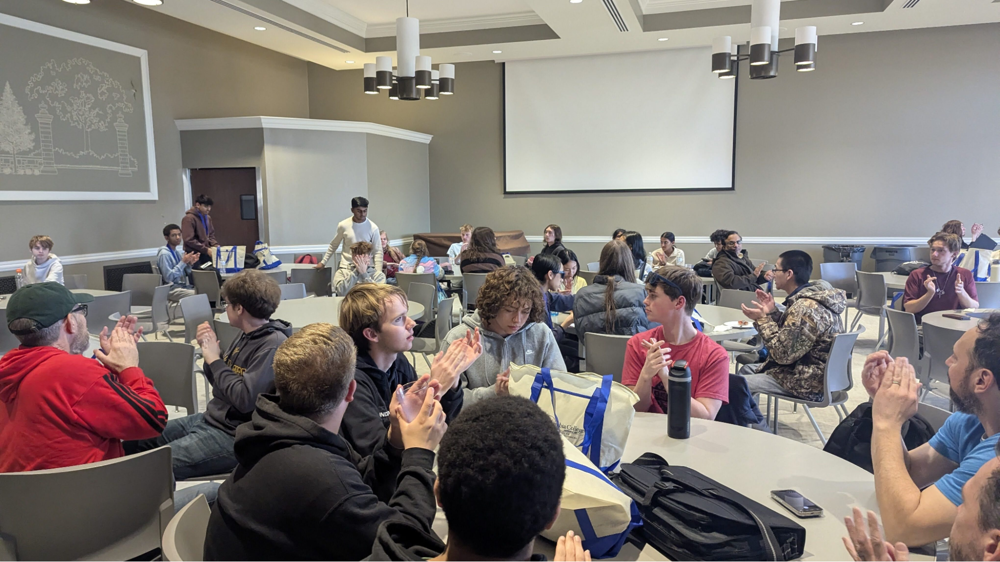
41 high school students registered. 1 high school student from India took part remotely. Graduate Ryan (at Google) was the lunch time guest speaker (video). I hope in a few years’ time hopefully we will all host more than 200 high school students and many more remotely throughout the world.
In 2025, we had our first chess tournament:
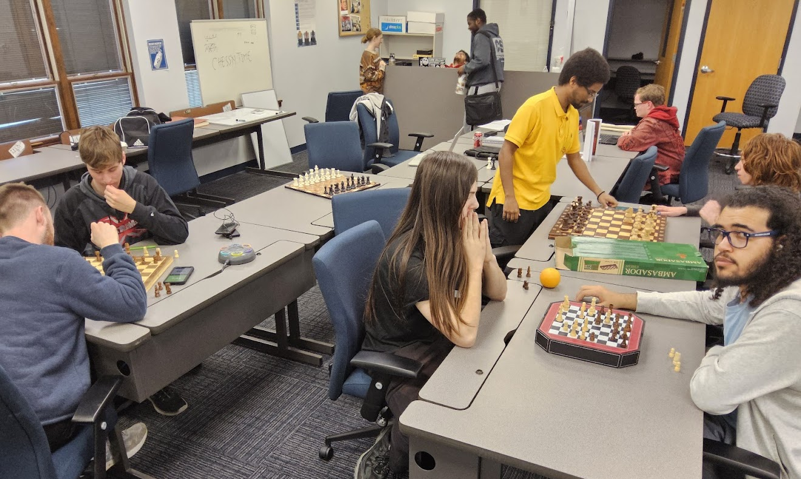
Here is a company tour of MidwayUSA. During the tour, we were shown some of the most sophisticated warehouse automation equipment.
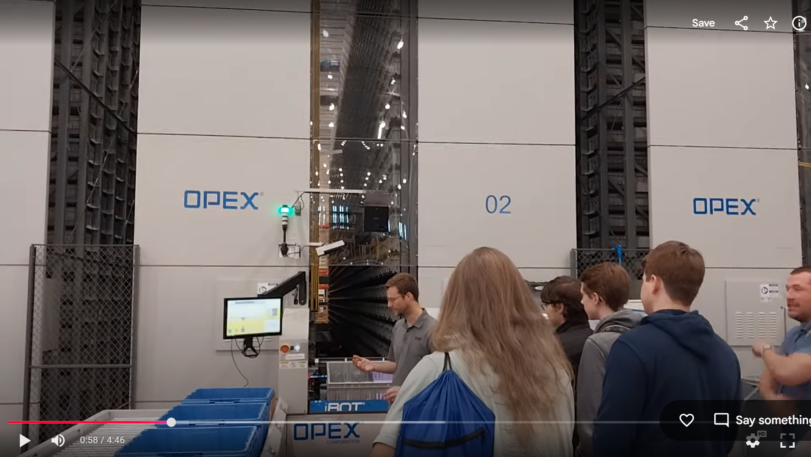
MidwayUSA has 6 departments in their IT division. 5 of the 6 IT managers are my graduates.
There is our CS jam where students play a musical instrument, sing a song, read a poem, etc.


There’s also movie nights,
game tournaments, etc.


Graduates come back to visit me. Here’s Michael Fisher who came back to town and had coffee with some students at a local coffee shop. He was at Selex ES (air traffic management) and then moved to Garmin (GPS and avionics). He also gave a talk on his work.
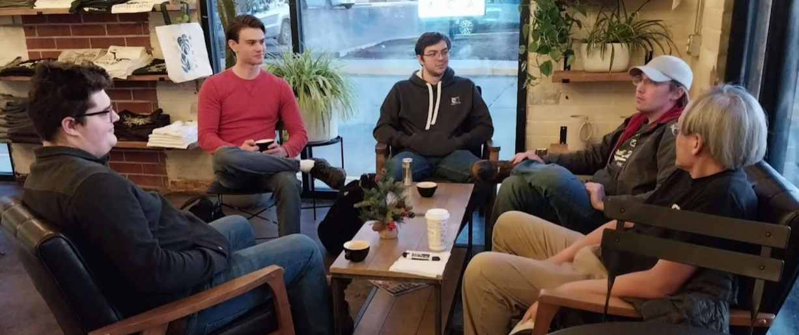

Here is a lunch meeting with graduate Julia Collins at our dining hall:
 After working in New York for a few years, Julia now has a startup in IT consulting. And here’s Saurav (Netflix, Google) who flew back to Columbia from California and had dinner with us at a popular local Chinese restaurant (he’s the rightmost person):
After working in New York for a few years, Julia now has a startup in IT consulting. And here’s Saurav (Netflix, Google) who flew back to Columbia from California and had dinner with us at a popular local Chinese restaurant (he’s the rightmost person):
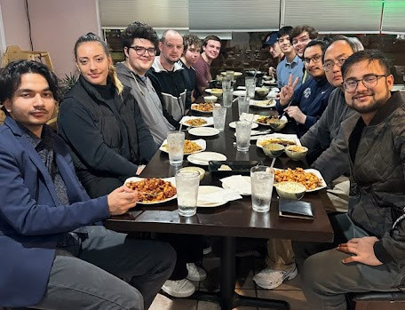
Another one of our traditions is our CS Welcome Lunch where CCCS majors and graduates are invited. It’s a great opportunity for graduates to meet with each other again and also for current undergraduates to hear what graduates are working on.
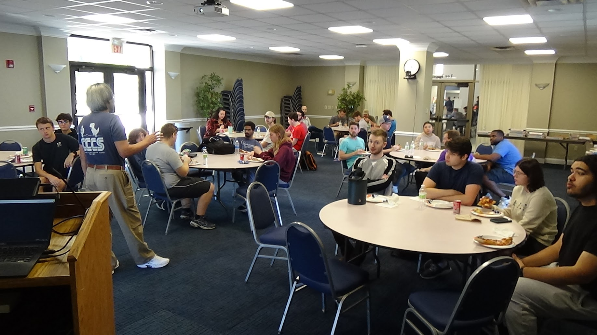
The CCCS majors also started the CC table tennis club. We hold our CC Open Table Tennis Tournaments once every semester.
CCCS is not just a CS degree program. It’s a strong and active community of people who are passionate about CS.
According to google:
Columbia College in Missouri is recognized as one of the safest college campuses in the nation, often ranked among the top in the country for safety, security, and low crime rates, earning a superior safety score of 98.18 in past evaluations.
Key 2026 Safety Features & Data:
As of 2026, the average cost of living index for Columbia Missouri is 91.3 out of 100 for average. Therefore Columbia Missouri is very affordable and the cost of living for Columbia, Missouri, USA is below the national average.
Columbia, Missouri, USA is frequently listed as one of the top most livable college towns in the USA. For instance according to an article in USA Today Columbia, Missouri is ranked #17 among all college towns in the USA. The website livability.com has ranked Columbia, Missouri as high as #6 for
| 1 Semester | 2 Semesters | 3 Semesters | |
|---|---|---|---|
| Tuition | $14,677 | $29,354 | $33,992 |
| Books | $240 | $480 | $720 |
| Housing | $3,313 | $6,626 | $18,266 |
| Food | $2,700 | $5,400 | - |
| Transportation | $800 | $1,760 | $3,088 |
| Personal | $2,240 | $4,480 | $8,928 |
| Loan Fees | $16 | $32 | $48 |
| Cost of Attendance | $24,066 | $48,132 | $65,042 |
| Residential Hall | Fall 2026–27 Cost per Semester |
|---|---|
| Banks double room | $2,841 |
| Hughes double room | $3,040 |
| Hughes Haven | $3,320 |
| New Hall | $3,637 |
| Cougar Village | $3,735 |
An important step is the application of F1 student visa. The crucial step is the F1 visa interview at your local US Embassy.
To prepare for the interview, you should definitely google something like “successful f1 visa application interview for international students”. Do some mock interviews either with friends or with yourself, recording the process with your phone and try to improve. For instance the interviewing officer might ask you why you choose to go to Columbia College to study CS. You would of course need to know as much about CCCS as possible and you need to know what are your reasons for choosing CCCS. The information above should be helpful.
The denial rate for F1 visa applications seems to be high, around 35%-40% for Japan. Here is a Visa Interview Prep Sheet (F-1 Student Visa Focus) from Google. Don’t panic if you fail the F1 visa interview. You can apply for a second interview. The passing rate for the second interview is very high. You can also request for an expedited F1 visa interview.
The International Student Office (Britta Wright) will definitely help with the providing information on F1 visa application.
As part of the F1 visa application process, you will of course need to provide financial information to prove that you have enough finances to come to the USA for studies. So for sure you need to talk to parents, relatives, etc for financial support documents. Again googling will help. I did not come from a wealthy family. My parents had to talk to two of my uncles and one aunt to help provide bank statements so that I can come to the USA to study for my PhD. So getting all of such financial support and documents as soon as possible is crucial.
Q: Can I live off-campus?
A: Yes, a student can stay off-campus after 60 credit hours. 60 credit hours is roughly two years. This is a pretty standard practice among all colleges/universities. However I know that some of my students have successfully petitioned to stay off-campus after 1 year. During summer, international students who stay in the USA can stay off-campus through summer sublets. Summer sublets are usually very cheap.
(FYI: In the USA, it is common for apartment rentals to be signed with 12-month contracts. For students who are from another city or another state, they usually do not stay in Columbia during summer. Such students will “sublet” their apartments during summer when they leave Columbia during summer, usually at a much lower rent and at a loss. Columbia is a “campus town” with many students. According to google, there are about 10,000 students who are not from Columbia. So there are usually many cheap summer sublets. According to google summer sublets can be as low as $500 .)
Q. Do I need to know how to program to get into your CS program?
A. No. In our computer science program, we do not assume you have prior programming experience. We have very successful graduates who enter our computer science program without any programming background. In fact, taking programming classes from an instructor who is not competent might do more harm than good.
Q. What computer science courses do you offer?
A. The list below are all our current computer science courses. Computer science students also have to take some math courses and many of our CS students minor or double major in math. Some math courses of interest to computer science majors are listed below. This is a popular question that students ask. But in fact this is the wrong question! Why? Because the course offerings of most computer science programs are about the same. Every computer science program will have courses on programming, data structures, algorithms, etc. Yet some computer science departments successfully send their graduates to top companies while some don’t. It’s the teaching effectiveness and rigor of the program that is important, not the list of courses. Of course it is still a good idea to at least check that a computer science program has a good number of courses. A computer science program with less than 10 CS courses cannot possibly be good.
Q. Can I take science classes?
A. Yes. Columbia College also offers classes in physics, chemistry, and biology. Here’s a link to the catalog of courses offered at Columbia College.